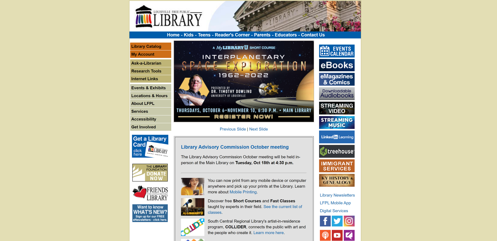
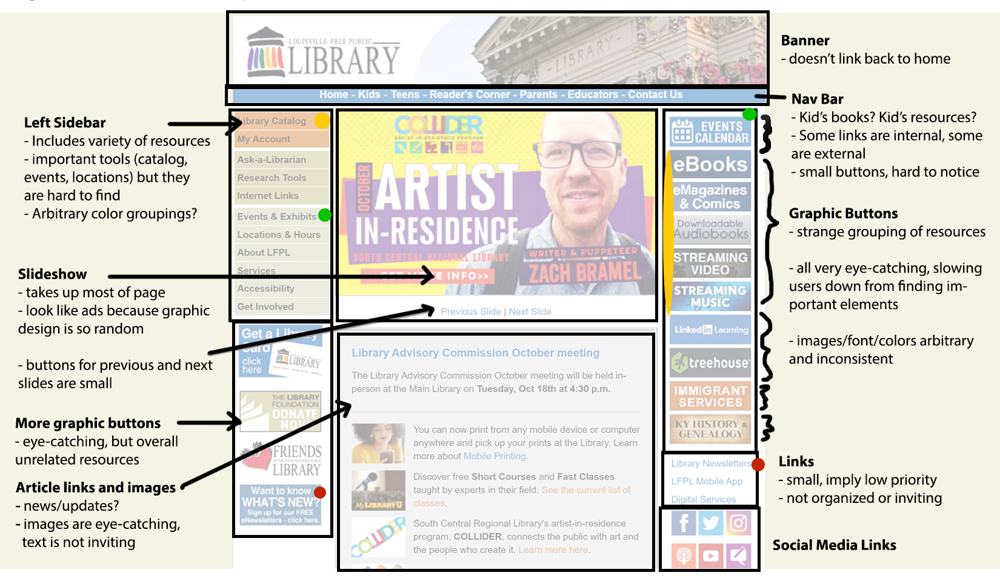
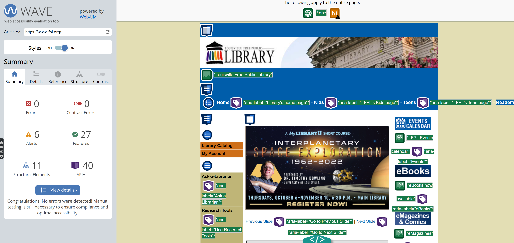
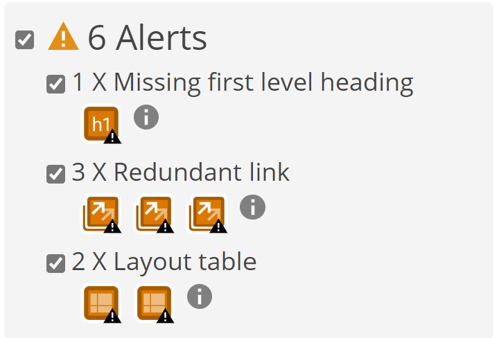
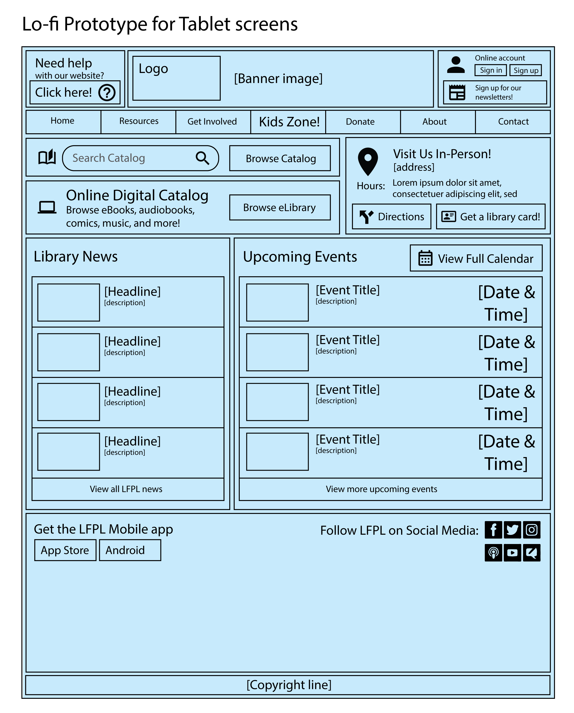
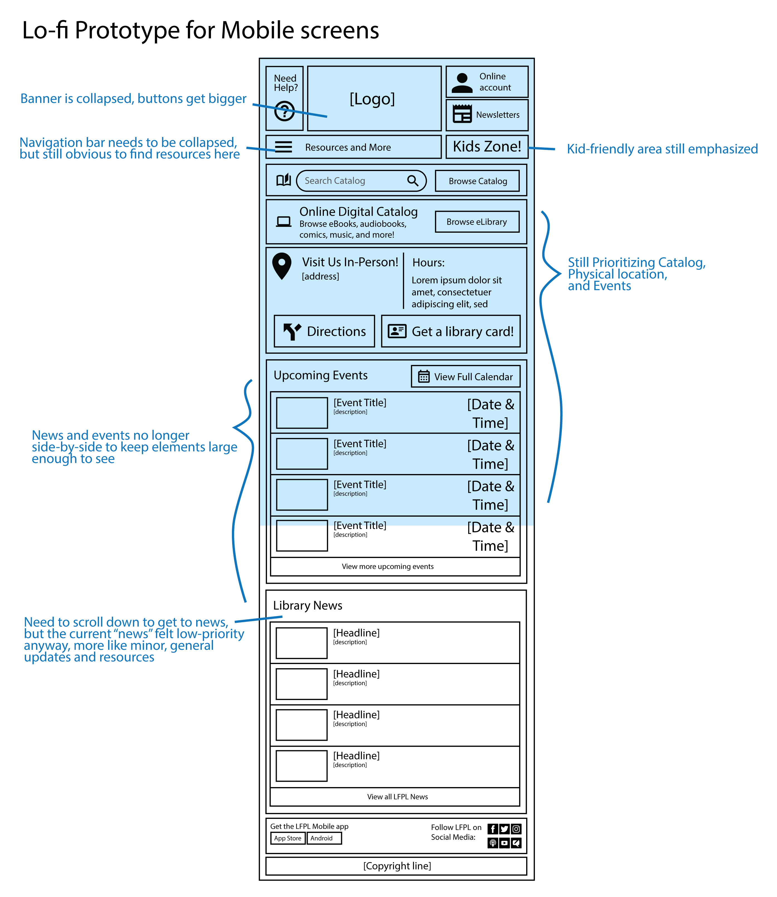
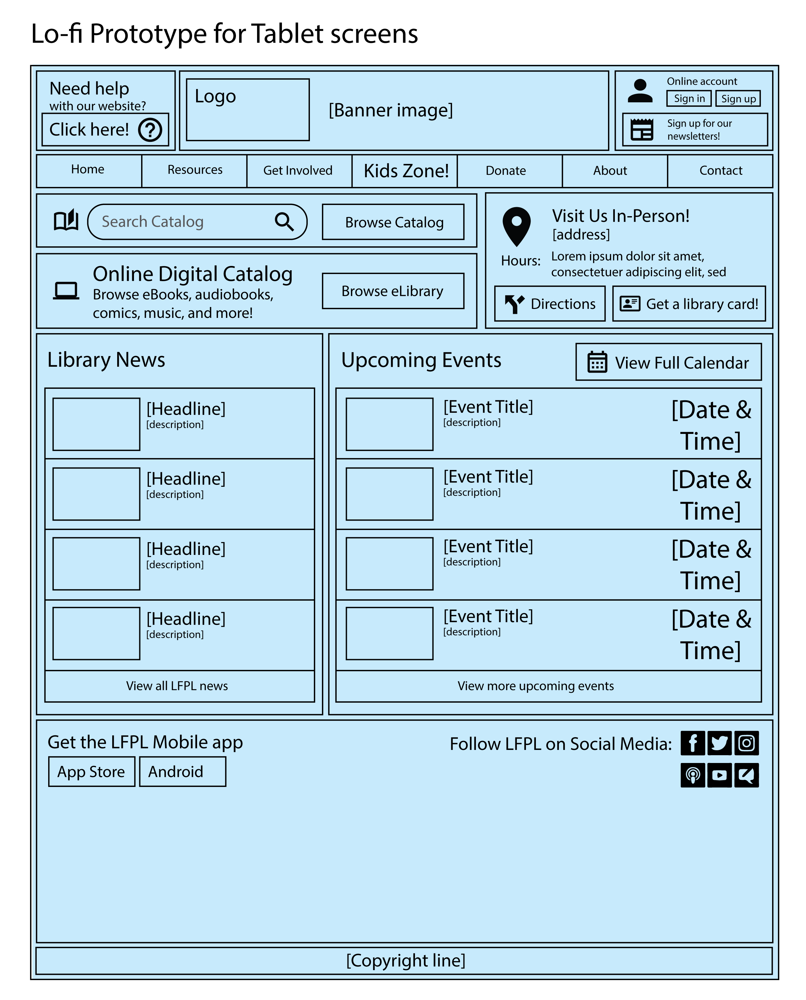
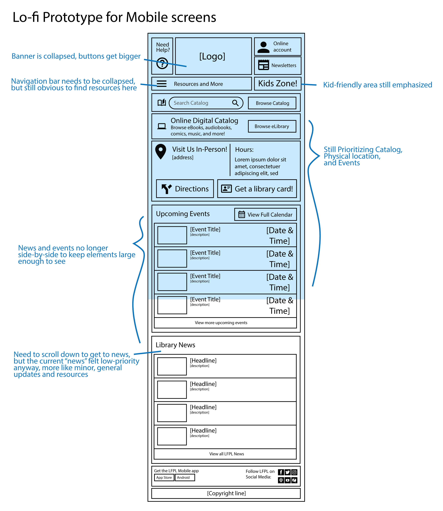
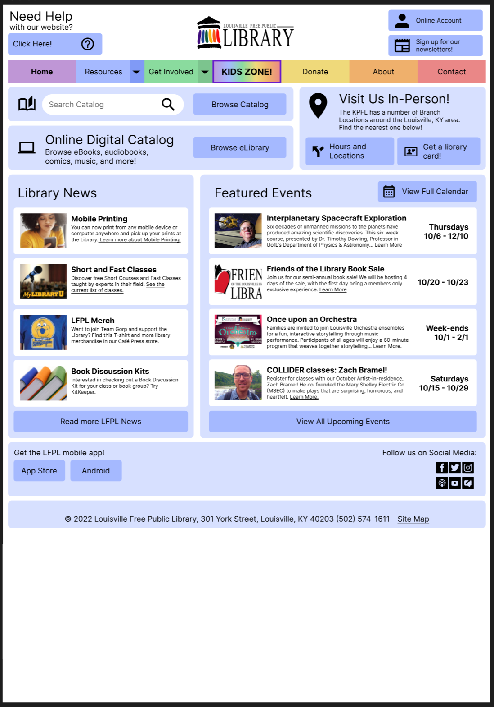
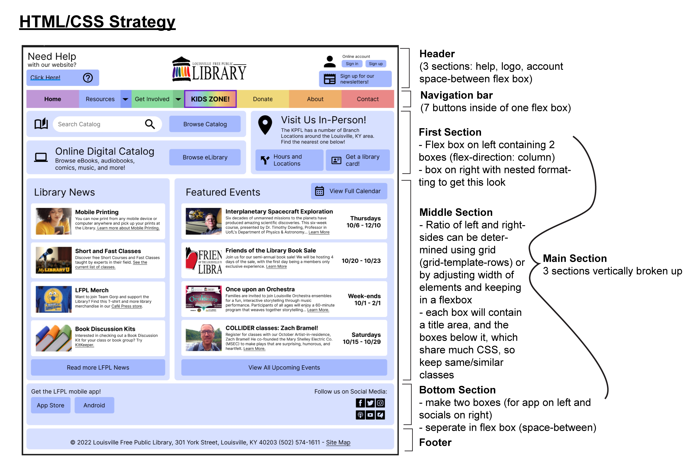

Product:
Redesigned LFPL Home Page
This website was coded from scratch using a variety of CSS grids and flexboxes.
The redesign was meant to feel a little more unique and provide the same resources as the original site but with better organization and unification. The colors of the new website are derived from the library's original logo (I did not create this logo).
Process:
Part 1: Identifying Usability Problems
Selected Website:
The webpage I chose to re-design is the homepage of the Louisville Free Public Library's website.
I chose this website to redesign because
- The user interface is overwhelming and outdated
- I stumbled on it while looking for my hometown (Louisville, CO) library website, but it turns out this one is for Louisville, KY (which I thought was funny)
Identifying Problems:
Figure 2: Specific Problems
General Problems
| Usability and Efficiency |
|
|---|---|
| Accessibility |
|
| Conceptual Model |
|
Accessibility
The LFPL website was entered into WebAIM WAVE, a site that detects possible accessibility problems.
WebAIM revealed that the website uses Aria labels quite effectively to help visually impaired users. In fact the only issues that the site flagged were that the page was missing an "h1" tag, and that some links were repeated on the page, so pretty minor issues.
Part 2: Visual Redesign
Low-Fidelity Prototypes
 



Visual Design Guide
These styling principles would be used to unify the final product and keep consistent colors and style.
The style was meant to emulate other friendly library websites that I found, using pastel colors and rounded corners to feel a little softer.
High-Fidelity Prototypes
These prototypes, created in Figma, incorporate the colors and styles from the guide into the layout of the wireframes.
I made a seperate interface for mobile that was a little less crowded, but was not able to implement this version in the final design.
Desktop Figma
Tablet Figma
Mobile Figma
Here is the plan I made for implementing the actual elements. I relied mainly on Flex-box, but I could also use Grid for some parts.
Part 3: Coding and Deployment
Side-by-side Comparison
Reflection
This project taught me a lot about the process of prototyping. The framework of the original website was very complex to begin with, and I believe I did a good job of simplifying and updating the design.